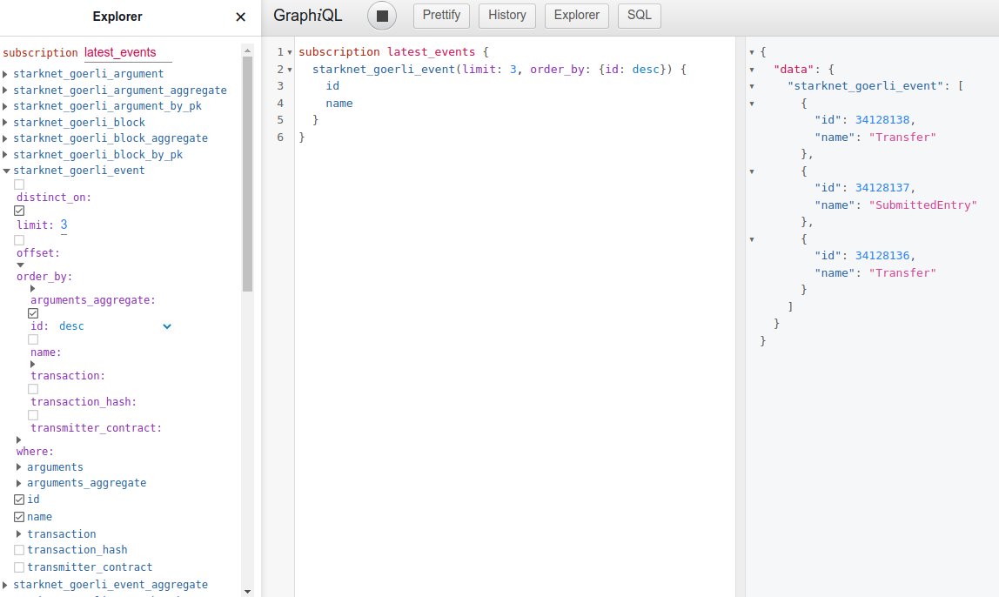

Subscriptions
A GraphQL subscription is essentially a query where the client receives an update whenever the value of any field changes upstream.
Subscriptions are supported for all kinds of queries. All the concepts of queries hold true for subscriptions as well.
The subscription will return the latest result of the query being made and not necessarily all the individual events leading up to the result. By default, updates are delivered to clients every 1 sec.
GraphQL Console
You can turn any query into a subscription by simply replacing query
with subscription as the operation type.
Let's try this query in the web console. It fetches
names of the three latest events emitted by smart contracts in StarkNet
goerli chain. To get the latest we order_by auto incremented event
id descending.
query latest_events {
starknet_goerli_event(limit: 3, order_by: {id: desc}) {
id
name
}
}
You should receive results similar to these. If you keep executing the query, you'll be getting more recent events, still limited to the 3 latest ones.
{
"data": {
"starknet_goerli_event": [
{
"id": 34127040,
"name": "Transfer"
},
{
"id": 34127039,
"name": "SubmittedEntry"
},
{
"id": 34127038,
"name": "SubmittedEntry"
}
]
}
}
Now change the operation type from query to subscription.
subscription latest_events {
starknet_goerli_event(limit: 3, order_by: {id: desc}) {
id
name
}
}
Click the execution button and see the results start updating automatically in the results pane. Note the button icon changed from play to stop.

Node.js
We put together a simple example client that subscribes to the blockchain indexer. It is just a few lines of javascript code in subscriber Github repo. Use it as a starting point for your own client that reacts to blockchain events.
The example client will wait for events which represent changes in the results of a GraphQL query, will print them out and exit after three events have been received.
Its default subscription query fetches the three latest blocks.
subscription { starknet_goerli_block(limit: 3, order_by: {block_number: desc}) { block_number, block_hash }}
You can pass your own subscription query as an argument. The following
query waits for the latest events emitted. Note both this and the
default query order results ordered desc to get the latest. If you
query without ordering you'll get the first rows which don't change and
don't trigger events.
npm start 'subscription {starknet_goerli_event(limit: 3, order_by: {id: desc}) {id, name}}'
Communication protocol
Our backend Hasura GraphQL engine uses the
GraphQL over WebSocket Protocol
by the
apollographql/subscriptions-transport-ws
library and the
GraphQL over WebSocket Protocol
by the graphql-ws library for
sending and receiving events. The GraphQL engine uses the
Sec-WebSocket-Protocol header to determine the communication protocol
that'll be used. By default, the GraphQL engine will use the
apollographql/subscriptions-transport-ws protocol.